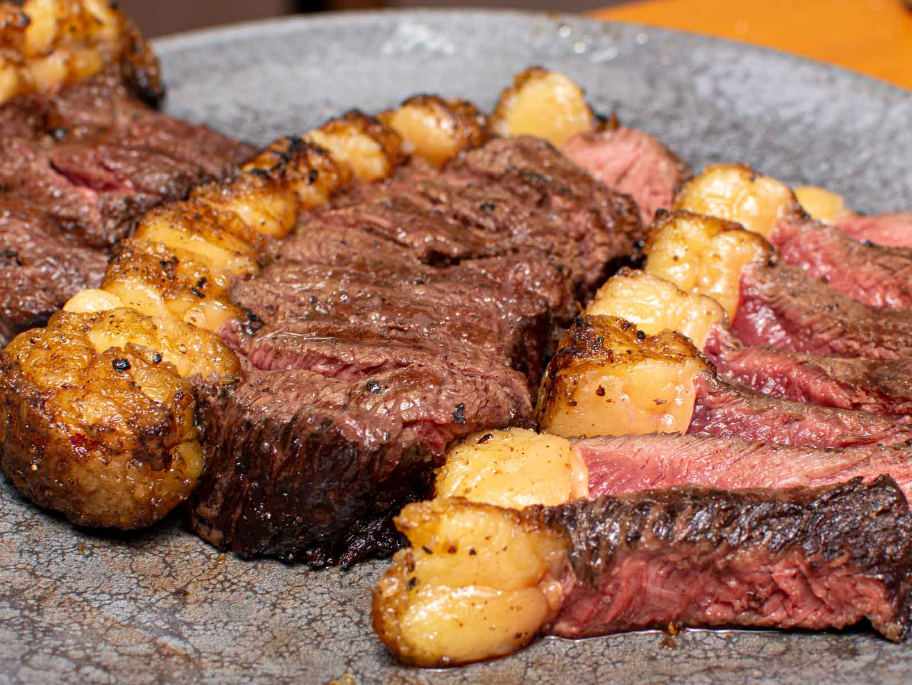

Churrasco

Picanha
A Picanha é um tipo de corte de carne bovina tipicamente brasileira.
A origem do nome Picanha advém do tratamento talhante Italiano, nomeadamente do corte Picatta.
Esta vara, chamada picana, possuía um ferrão na ponta e servia para picar o gado na parte posterior da sua região lombar.
Ingredientes
- 1 peça de picanha de até 1,2 kg
- 4 claras de ovos
- 1 kg de sal grosso
- ½ xícara (chá) de farinha de trigo
- ramos de tomilho fresco a gosto
Passo
- Preaqueça o forno a 220 ºC (temperatura alta).
- Numa tigela, coloque o sal grosso, as claras e a farinha de trigo. Misture com uma espátula até ficar uniforme - com aspecto de areia grossa molhada.
- Numa assadeira grande, coloque ⅓ da mistura de sal grosso e espalhe, pressionando com as mãos, para obter uma camada fina do tamanho da peça de picanha. Disponha os ramos de tomilho sobre o sal grosso.
- Com um pano de prato limpo, seque a peça de picanha e coloque sobre a camada de sal, com a gordura para cima. Envolva toda a picanha com o restante da mistura de sal grosso, formando uma capa - pressione com as mãos para que fique bem firme.
- Leve a picanha ao forno e diminua a temperatura para 200 °C (temperatura média). Deixe assar por 45 minutos para servir a carne ao ponto. Se você gosta da carne bem passada, deixe assar por 1 hora. Para a carne mal passada, 35 minutos são suficientes.
- Retire a picanha do forno. A camada de sal grosso, depois de assada, torna-se uma placa bem dura e levemente dourada. Com o auxílio de uma faca grande - utilize o lado contrário ao fio -, bata por toda a lateral da picanha para quebrar a crosta. Retire a placa de sal e reserve para a hora de servir.
- Raspe o excesso de sal da carne e transfira a picanha para uma tábua. Corte metade da peça em fatias finas. Cubra a picanha com a placa de sal grosso reservada - além de decorar, ela mantém o calor. Sirva a seguir.